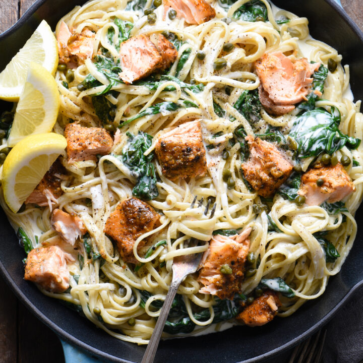

Creamy Salmon Pasta with Spinach

This recipe is an example of just how easy it is to make a "luxury" at home and impress anyone!
This Creamy Salmon Pasta with Spinach dish is perfect for an at home "date night". Although it seems very fancy, it is basically just cooking pasta, making a simple cream sauce, and roasting a piece of salmon. Simple, yet impressive.
What you will need
- Nonstick cooking spray
- 2 salmon fillets
- 1 teaspoon kosher salt, divded, plus more for pasta water
- 1/2 teaspoon ground black pepper, divided
- 12 ounces linguine
- 2 tablespoons unsalted butter
- 3 garlic cloves, minced
- 1-1/4 cups heavy cream
- 1/2 cup dry white wine
- 1 teaspoon grated lemon zest
- 1 box (5 ounces) baby spinach
- 2 tablespoons capers
- Lemon wedges, for garnish (optional)
How to make
- Preheat oven to 400 degrees F. Spray small rimmed baking pan with nonstick spray. Place salmon, skin side down, on prepared pan and sprinkle with 1/2 teaspoon salt and 1/4 teaspoon pepper. Bake 12 minutes or until salmon is almost opaque throughout and internal temperature reaches 145 degrees F.
- Meanwhile, in large pot of boiling salted water, cook linguine according to package instructions.
- Meanwhile, heat butter in large high-sided skillet over medium heat. Add garlic and cook 1 minute, stirring constantly. Add cream, wine, lemon zest and remaining 1/2 teaspoon salt and 1/4 teaspoon pepper. Heat to boiling over medium-high heat, then reduce heat to medium and cook 5 to 6 minutes or until mixture is thickened to a thin sauce consistency, stirring frequently. Reduce heat to low.
- Drain linguine and add to skillet. Stir in spinach and capers and cook over low heat 1 to 2 minutes or until spinach is just wilted.
- Remove salmon from oven. Slip spatula between salmon skin and flesh to remove skin; break into large chunks over linguine. Serve garnished with lemon wedges, if desired.
There you have it, a very impressive yet simple pasta dish. Throwing the salmon in there definitely up the luxurios factor of this dish. But, as you can see, it is quite simple to pull off. This dish will definitely show off your "home chef" skills!